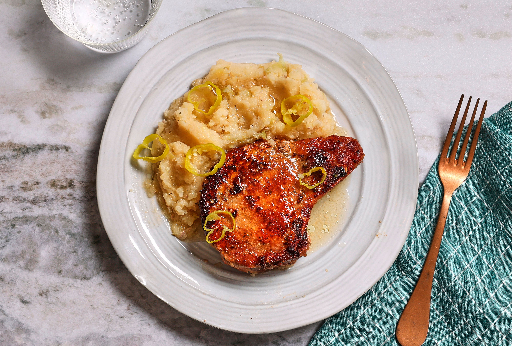

Potatoes and Porkchops
Ingredients
- 4 bone-in pork chops
- 5 medium potatoes, sliced
- 2 tbsp olive oil
- 1 tsp garlic powder
- 1 tsp paprika
- Salt and black pepper to taste
- 1 tbsp fresh rosemary or thyme
- 2 tbsp butter
- 1/2 cup chicken broth (optional for moisture)
0:00
3:10
Preheat oven to 400°F (200°C).
Season pork chops with salt, pepper, garlic powder, and paprika.
Heat olive oil in a skillet and sear the pork chops 2–3 minutes per side.
Set aside.
In a baking dish, layer potato slices, seasoned lightly with salt and rosemary.
Dot with butter. Add a splash of chicken broth if desired.
Place pork chops on top.
Cover with foil and bake for 30 minutes, then uncover and bake another 10–15 minutes until golden.
Serve hot, straight from the oven!